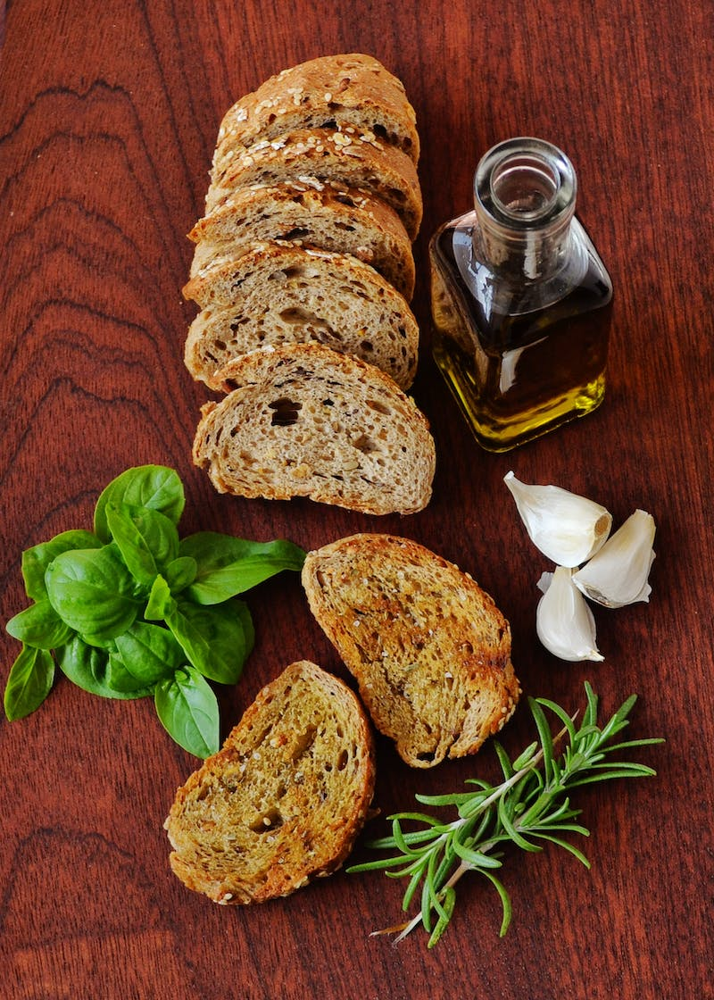

Description
The magic of garlic bread a rare one that can be blended with the right sauce of your choice, gives a crunchy, crispy, garlic-ish feel you can ever get.
- 1lf crusty bread, split
- 4 cloves of garlic, crushed
- 2tbsp of butter
- 2tbsp extra-virgin olive oil
- Chopped fresh parsley
- 3tbsp of grated cheese, Parmigiano or Romano optional
Easy steps:
Combine garlic, butter, and oil in a microwave safe dish or in a small saucepan. Heat garlic and butter and oil in microwave for 1 minute or in a small pot over moderate-low heat for 3 minutes.
Toast split bread under broiler. Remove bread when it is toasted golden brown in color. Brush bread liberally with garlic oil. Sprinkle with cheese, if using, and parsley. If you added cheese, return to broiler and brown 30 seconds. Cut into chunks and serve.